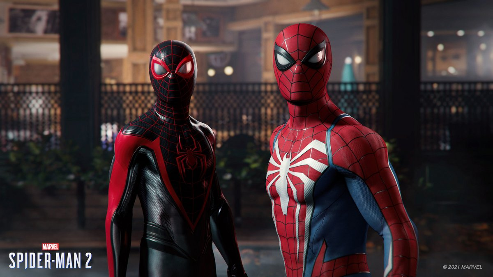

🕷️ Une aventure spectaculaire
Dans ce nouvel opus, incarnez Peter Parker et Miles Morales dans une aventure palpitante à travers New York. Affrontez Venom, le Lézard, Kraven et d'autres encore, explorez de nouvelles zones, et découvrez un scénario riche en émotions. Tout le monde avait évidemment beaucoup d'attente pour ce jeu.Nous continuons l'histoire de Peter Parker et de Miles Morales qui devront à nouveau protéger New York. Protéger New York face à plein de nouveaux ennemis:le Lézard, Kraven,l' Homme Sable et bien sûr VENOM.L'histoire principale est,pour nous,meilleur que marvel's spider man ,mise à part la fin,qui,nous à déçu. Nous découvrirons Harry Osborne,Docteur Connors...Peter attrapera le symbiote et le jeu deviendra beaucoup plus noir qu'auparavant. C'est tout simplement l'un des meilleurs gameplay de jeux vidéo!Se balancer dans New York est tout simplement incroyable. Largement meilleur que les deux premiers opus,avec une grande fluidité. Nous disposons désormais les deltas toiles qui nous permettent de nous déplacer plus rapidement notamment avec les courants d'airs disposé dans le monde ouvert .Nous pouvons switché entre Miles et Peter très facilement. Le voyage rapide est exceptionnel,il suffit de maintenir triangle sur l'endroit que l'on souhaite aller pour y être sans temps de chargement quasiment. Vous disposez de quatre gadjets super cools en vérité.Nous pouvons,du côté de,l'infiltration créé des filins de toiles pour se déplacer davantage. On peut aussi faire une double élimination seulement sur un filin de toile.Avec le symbiote, le combat est totalement différent et plus violent. Les quêtes secondaires sont peu intéressantes.
✨ Points positifs
- Un gameplay incroyable ( le balacement, le combat )
- Des graphismes époustouflants
- Une histoire bien écrite avec énormément de rebondissements surout avec Venom
- L'évolution des personnages Miles en particulier
❌ Points négatifs
- Quêtes secondaires peu intéressantes.
- La fin légèrement décevante.
- Pas de dlc.

📝 Notre avis
Insomniac Games a sorti le gros lot avec Marvel ce jeu restera inoubliable ! Un grand merci à Insomniac Games pour cette expérience inoubliable.
✍️ Notre note
🌟🌟🌟🌟🌟